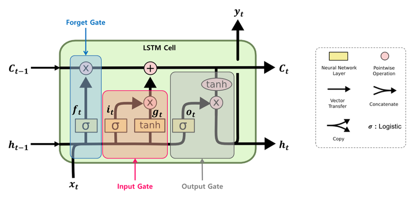

LSTM의 구조와 메커니즘

LSTM의 장점:
-
장기 의존성 해결: 셀 상태를 통해 시퀀스 전반에 걸쳐 정보 전달
-
기울기 소실 완화: 게이트 메커니즘으로 불필요한 정보 걸러내기
-
정보 조절: 시그모이드 및 하이퍼볼릭 탄젠트 활성화 함수로 정보의 흐름 제어
RNN/LSTM의 주요 응용 분야
자연어 처리
-
기계 번역
-
텍스트 생성
-
감성 분석
-
언어 모델링
기타 응용
-
음성 인식
-
시계열 예측
-
이상 탐지
-
이미지 캡셔닝
응용 분야의 특성:
-
순차적 데이터 처리: RNN/LSTM은 입력 시퀀스의 순서 정보를 유지하고 이전 상태를 고려하는 데 최적화
-
장기 의존성: LSTM은 시퀀스의 시작 부분에서 끝 부분까지의 의존성을 모델링할 수 있어 긴 문장이나 시간 시리즈 처리에 적합
-
실제 응용: 대부분의 자연어 처리 및 시간적 데이터 관련 인공지능 시스템의 핵심 구성 요소